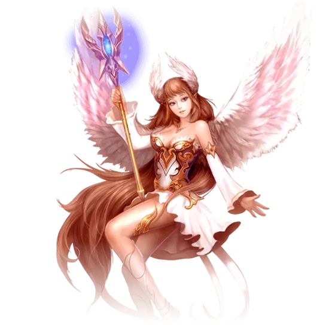

Saga do Herói: Sacerdote
A saga alada, e a única com três provas cronometradas seguidas — voo, sensibilidade e tambor. Nenhuma é difícil, mas todas falham se você parar no meio, e as três se refazem sem custo.

O que você ganha
Ovo de Jadezinho Sonoro — um mascote cosmético, que só aparece depois de ser adicionado ao Códice.
Título: Destinado à Lua — +100 de HP, e colorido.
Os dois saem do baú brilhante no canto inferior direito do retrato, dentro da janela da Saga do Herói. Uma vez só por personagem.
Antes de começar
A saga pede nível 80 de pico histórico e cultivo Mahayana. E vale esperar: a experiência das missões escala até o nível 100 e para de crescer ali, então fazer antes disso é jogar fora boa parte do que a saga paga.
Como abrir
Abra a Saga do Herói, clique no Sacerdote e fale com Mu Yunze em 322,434. Depois fale com o Soldado da Fronteira em 329,444.
O que costuma travar
As três provas do Nitinen têm relógio: capacidade 5 minutos, sensibilidade 10, tambor 3. Falhar não custa nada — cancele e pegue de novo com ele.
Na prova de sensibilidade, as esferas azuis tiram o buff. Você precisa juntar 10 camadas passando pelas vermelhas; encostar numa azul dissipa o que já tinha.
As 35 missões, em ordem
- Saga Sonho de Dia — fale com Mu Yunze em
322,434e depois com o Soldado da Fronteira em329,444. - Procurando a Cura — fale com o Soldado outra vez e vá a
307,435. - Jade – Uma Viagem ao Norte — fale com o barco e espere chegar.
- Tambor de Jade – Esperando — pegue a missão na Flor de Mil Pétalas, ali perto.
- Yuusa – Preparada para tudo — vá ao portal em
412,593e cave. - Jade – Compaixão Médica — fale com o Homem de Preto, ali perto.
- Jade – Uma sensação Perigosa — fale com ele de novo e vá a
412,589. - O Tambor de Jade chegou! — cave a Flor de Mil Pétalas.
- Eco – Retornar a Cidade — fale com Ewlen, ali perto.
- Eco – Uma Mentira Bondosa — fale com Ewlen, vá a
321,446, cave a terra e encontre o Sacerdote Mu Feng em322,434. - Jade – Amor Profundo — fale com Mu Feng e vá a
312,428. - Eco de Jade – Reencontrando — fale com Mu Xingchen, ali perto.
- Relato da Batalha — fale com o Soldado Mensageiro e relate ao Sacerdote Mu Feng.
- Retorno à Origem – Jade — fale com Mu Yunze e vá a
318,442. - O Canto de Yuusaa — fale com a florzinha murcha, cave ali perto e fale com Mu Yunze.
- Voo de exercício — fale com Mu Yunze e espere alguns segundos.
- Relátório da Batalha de Jade — fale com o Soldado Mensageiro duas vezes.
- Jade – Atrás do Inimigo — fale com Mu Yunze.
- Yuusaa era Você — fale com Xingchen, ali perto.
- Sopro – A Cidade das Plumas — fale com Ewlen e vá a
299,398. - Voz do Jade – Reorganizando — fale com o Ancião da Cidade Yi Yulan e encontre Nitinen em
297,395. - Teste de Voo — fale com Nitinen.
- Saga – Teste de Capacidade — fale com Nitinen. São 5 minutos: cave as bandeiras nos pontos que a missão indica e volte a ele.
- Saga – Teste de Sensibilidade — fale com Nitinen e vá a
297,385. São 10 minutos: junte 10 camadas de buff nas esferas vermelhas, desviando das azuis, e volte a ele. - Teste do Tambor de Jade — fale com Nitinen. São 3 minutos: vá a
311,387, elimine 5 Homens de Madeira e volte. - Chegando a Linha de Frente — fale com Mu Yunze e encontre Nitinen no campo de batalha.
- Saga da Yuusaa – Briga — fale com Mu Xingchen e vá a
381,768. - Saga – Reconciliação — espere 30 segundos e fale com Mu Yunze.
- Procura do Yuusa — fale com Mu Yunze, vá ao acampamento humano em
352,805, depois346,804e338,809. - Saga de Yuusa – O Fim da Vida — encontre Mu Yunze em
343,819e fale com ela. - Saga – Yuusa em Batalha — fale com Mu Yunze.
- Jade Echo – O Último Presente — fale com Mu Yunze, depois com Nitinen, e espere a história acabar.
- Voz do Jade – Florescer o Mar — fale com Ewlen e vá a
318,442. - Jade Chorus : Colheita — fale com Mu Yunze e cave uma Flor de Mil Pétalas.
- Troca de Cristal de Jade — fale com Mu Yunze outra vez.
Parabéns! Você terminou a Saga do Herói do Sacerdote.
Volte à janela da Saga do Herói, abra o retrato de Yuusa e clique no baú para pegar Ovo de Jadezinho Sonoro e o título Destinado à Lua, que vale +100 de HP.
Esta é das que o wikipw marca como vindas do servidor de testes. Os nomes batem com a PWpedia, que registra a mesma Cleric Yuusa e o mesmo título — Lunar Destined — então a recompensa está confirmada por duas fontes. Os detalhes de coordenada é que podem ter mudado no caminho.
Conferido contra a Wiki PW, o Trivia PW e a PWpedia. Achou um passo diferente no jogo? Conte no Discord que a gente corrige.